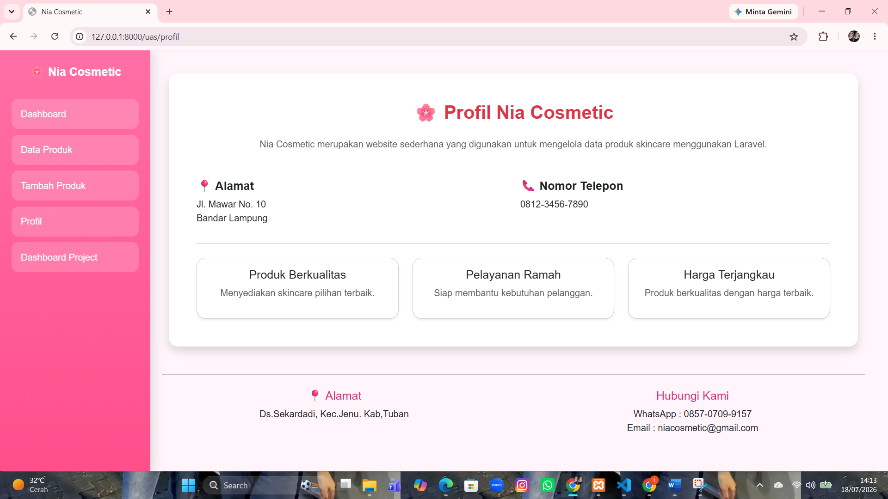

Website Portofolio Pribadi
Proyek pembuatan website portofolio pribadi sebagai salah satu tugas Ujian Akhir Semester (UAS) mata kuliah Pemrograman Web menggunakan HTML dan CSS melalui Visual Studio Code.

Deskripsi Proyek
Website Nia Cosmestic merupakan website toko online yang dibuat untuk menampilkan produk-produk kosmetik kepada pengunjung. Website ini dirancang dengan tampilan yang menarik, rapi, dan mudah digunakan sehingga pengunjung dapat melihat informasi produk yang tersedia.
Tujuan Proyek
Tujuan pembuatan website ini adalah untuk menerapkan materi Pemrograman Web serta mengembangkan kemampuan dalam membuat website toko kosmetik menggunakan HTML dan CSS. Website ini juga bertujuan untuk memperkenalkan produk Nia Cosmestic melalui media digital.
Proses Pengerjaan
Proyek dikerjakan dengan menyusun struktur halaman website menggunakan HTML, kemudian mengatur tampilan, warna, tata letak, dan elemen halaman menggunakan CSS. Seluruh proses pengerjaan dilakukan melalui Visual Studio Code.
Tools dan Teknologi
Hasil dan Pembelajaran
Hasil dari proyek ini adalah sebuah website toko kosmetik bernama Nia Cosmestic yang memiliki tampilan menarik dan tertata. Website ini menampilkan informasi serta produk kosmetik sebagai media pengenalan toko secara digital. Melalui proyek ini, saya dapat menerapkan keterampilan HTML dan CSS dalam membangun sebuah website.